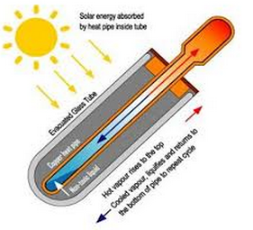

En vakuumsolfångare fungerar lite som en termos, med två rör och vakuum emellan, som fungerar som isolering. Det yttre röret är gjort av glas, och det inre röret är där värmen samlas. Det inre röret blir väldigt varmt, mellan 200-250 grader, och det är här man tar vara på värmen. Det finns två sätt att ta vara på värmen;
U-rör: Ett U-format rör innehållande en värmebärare går ner i det inre röret, som absorberar värmen och transporterar bort värmen till ackumulatortanken.
Heat-pipe: En kopparpistong innehållande vätska stoppas ner i röret. När väskan blir varm och förångas trycker den upp pistongen mot en värmeväxlare. Värmen förs över till värmeväxlaren och vidare till en annan vätska, och vätskan i röret kondenserar och sjunker ner för att värmas upp på nytt.
I klippet nedan förklaras vakuumsolfångaren mer grundligt
U-rör
Heatpipe